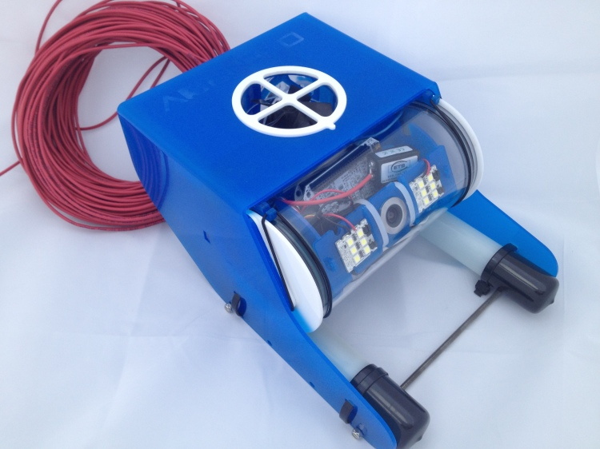
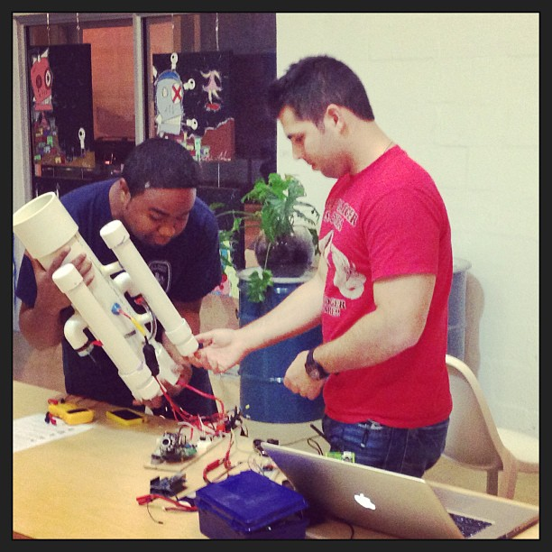
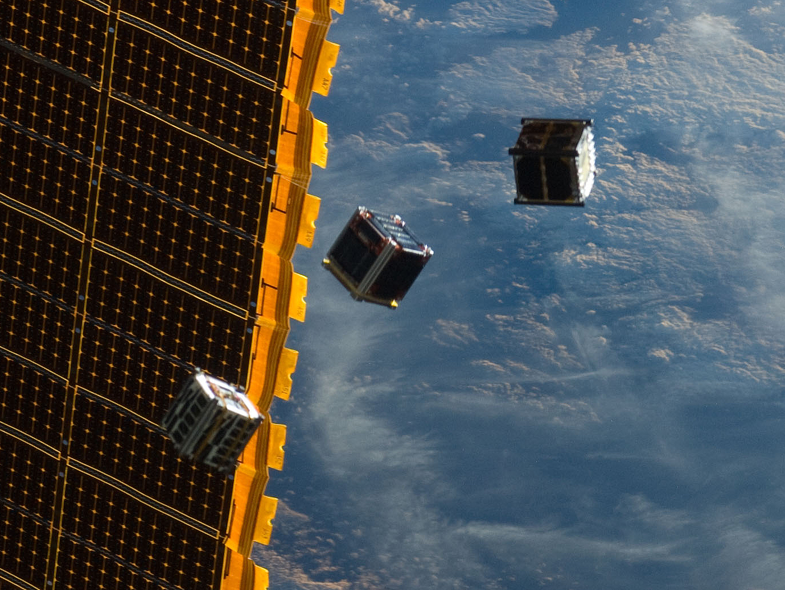

By Nancy Molina, Rebekah Monson, and Eliot Rodriguez
#541drones | Tech Trends, University of Miami Interactve Media
OpenROV: Open-source kit robot
Sensor Sub: Miami-based water-testing drone
NASA CubeSats initiative
Thanks to José Hernandez! Find him online at josehelps.com.